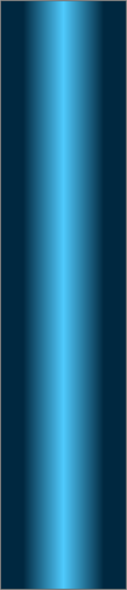
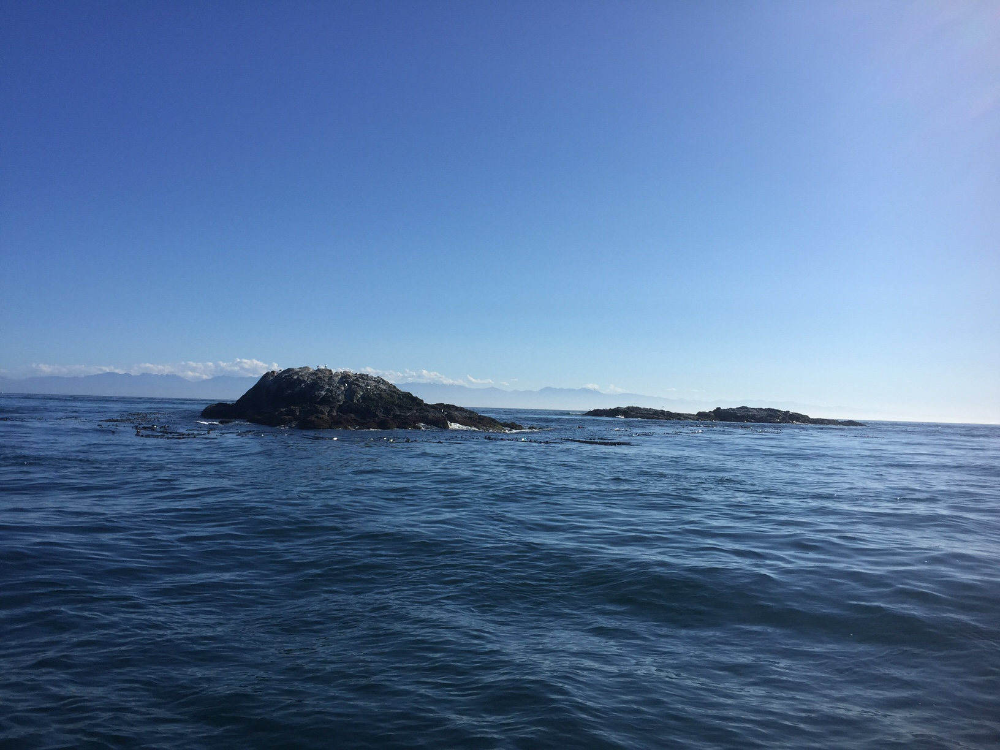
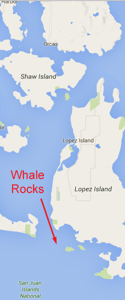
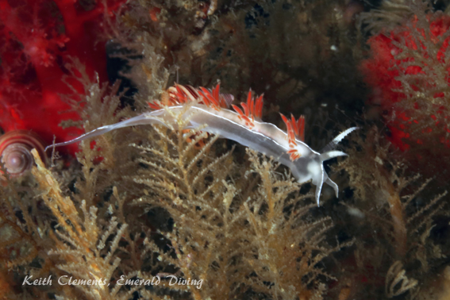
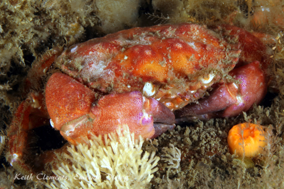
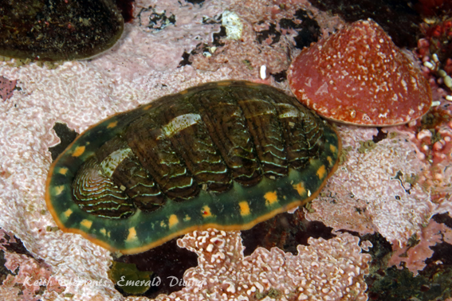
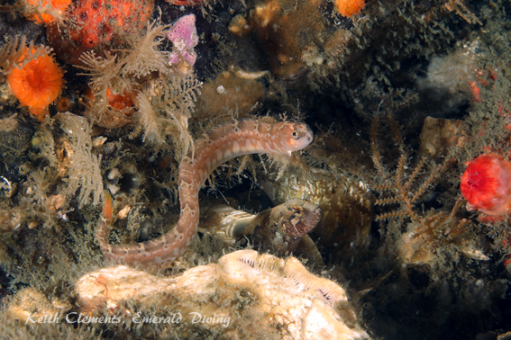
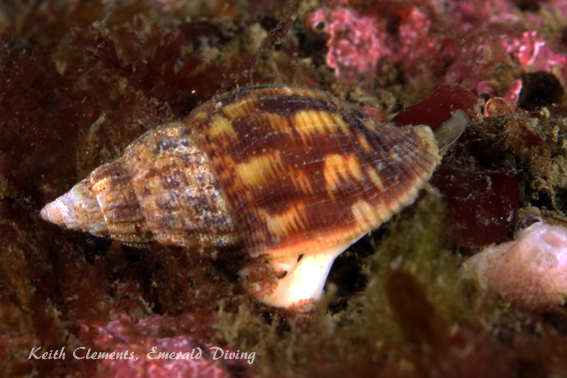

Double click to edit

Whale Rocks
Topography: Very steeply but narrow sloping rocky structure cascading down to over 140 feet.
San Juan Islands marine life rating: 5
San Juan Islands structure rating: 4
Diving depth: 50-110 feet
Highlight: Unbelievable color, density, and diversity of Pacific Northwest invertebrates – very much like Long Island wall! An absolutely gorgeous dive.
Skill level: Advanced
GPS coordinates:
Access by boat: Whale Rocks are located on the eastern side of the Cattle Pass/San Juan Channel area, just west of Long Island. There are two exposed rocks comprising Whale Rocks. This dive site is on the north end of the eastern-most rock. I imagine on a foggy day from the distance, these rocks might look like surfacing whales, especially if one has been hitting the rum hard.
Dive profile: This dive is not for the timid. It is a slack water dive, but slack doesn’t last long in San Juan Channel. Extremely heavy current plagues these rocks on flooding and ebbing tides.
I only dive the southern end of the more eastern of the two rocks as there is a substantial drop-off at this location. The substrate drops off very quickly at the rock – it is over 100 feet deep not 40 feet from the rock. On a flooding tide this part of the rock is in the lee of the current. On an ebbing tide, this location gets hammered with current from San Juan Channel.
The topography at this site consists of severely sloping to vertical rock formations with all sorts of cracks and crevices to explore. As the end of the rock is a bit curved, I typically descend to my desired max depth, then work one way along the rocky structure until I start to feel uncomfortable with the current coming at me. I then ascend a bit and head back the other direction – again until I feel uncomfortable with the current coming at me from the other side of the rock. I keep repeating this process as my air supply and no-deco time allow.
A decent sized kelp bed lines the southwest corner of the rock and provides entertainment during a safety stop. But again be careful not to go too far out in the channel between the two rocks comprising Whale Rock as the current picks up very quickly and can easily carry off a diver.
This is definitely a live boat dive. However, be warned that Whale Rocks was deemed a marine sanctuary in 2005. Officially, boats are not to come within 200 yards of these rocks although I see sightseeing boats well within that limit quite often. As courtesy to the marine bird and mammals that use these rocks, I typically drop diver from the boat then move the boat off the rocks a ways until the divers resurface.
My preferred gas mix: EAN 32
Current observations:
Current Station: San Juan Channel (south entrance)
Noted Slack Corrections: None
This dive could be lethal if attempted on an ebb. I only dive this site at slack once the ebb has stopped, and on relatively minor floods (2.8 knots or less). Standing waves on either side of the dive site due to strong currents are expected once the flood gets moving. Again, the intent with this dive is to stay in the lee of the current afforded by the rock. Even when starting the dive at slack, I can feel the “window” of lee current behind the rock tightening as the flood intensifies.
Hazards:
Current: Dangerous current on the ebb, and strong currents on either side of the rock of the flood.
Depth: The bottom drops off quickly from the rocks and continues well past recreational diving limits.
Exposure: On occasion when the wind is from the southwest, we have noted swell at this location, although it has been unnoticeable below about 10 feet. Also, this site is exposed to winds from the south or southwest.
Boat launches:
Cornet Bay. Approximately 16 miles from the dive site. This park offers a good boat launch with docks, and restroom facilities. Note that a Discovery Pass is required to use this launch.
Marine life: After dropping through the kelp, the rocky structure is covered in a carpet of stunning brooding anemones in pinks, reds, and oranges. A photographer with a macro lens could spend their entire in the top 60 feet of water with these colorful anemones. Below the brooding anemone zone, other dense and varied invertebrates carpet the rocks, creating a wonderful macro ecosystem for all sorts of nudibranchs, small sculpins, various crabs, colorful chitons, snails, Bi-valves – the list goes on and on.
This is one of those sites where spectacular crimson anemones flourish, along with their equally stunning caretakers, the candy stripe shrimp. Large colonies of sea fir and ostrich plume hydroids, sponges, cup-corals, and ascidians serve as fodder for at least a dozen nudibranch species.
Again, this site is very similar to that of Long Island, which is saying a lot as Long Island wall is the best dive in the San Juans in my opinion. However, conditions at this site can be very intimidating once the current gets rolling. If you are not 100% certain about your abilities, my advice is to pass on this site and dive Long Island wall – it is much bigger and is divable throughout the flood on minor exchanges.
San Juan Islands marine life rating: 5
San Juan Islands structure rating: 4
Diving depth: 50-110 feet
Highlight: Unbelievable color, density, and diversity of Pacific Northwest invertebrates – very much like Long Island wall! An absolutely gorgeous dive.
Skill level: Advanced
GPS coordinates:
Access by boat: Whale Rocks are located on the eastern side of the Cattle Pass/San Juan Channel area, just west of Long Island. There are two exposed rocks comprising Whale Rocks. This dive site is on the north end of the eastern-most rock. I imagine on a foggy day from the distance, these rocks might look like surfacing whales, especially if one has been hitting the rum hard.
Dive profile: This dive is not for the timid. It is a slack water dive, but slack doesn’t last long in San Juan Channel. Extremely heavy current plagues these rocks on flooding and ebbing tides.
I only dive the southern end of the more eastern of the two rocks as there is a substantial drop-off at this location. The substrate drops off very quickly at the rock – it is over 100 feet deep not 40 feet from the rock. On a flooding tide this part of the rock is in the lee of the current. On an ebbing tide, this location gets hammered with current from San Juan Channel.
The topography at this site consists of severely sloping to vertical rock formations with all sorts of cracks and crevices to explore. As the end of the rock is a bit curved, I typically descend to my desired max depth, then work one way along the rocky structure until I start to feel uncomfortable with the current coming at me. I then ascend a bit and head back the other direction – again until I feel uncomfortable with the current coming at me from the other side of the rock. I keep repeating this process as my air supply and no-deco time allow.
A decent sized kelp bed lines the southwest corner of the rock and provides entertainment during a safety stop. But again be careful not to go too far out in the channel between the two rocks comprising Whale Rock as the current picks up very quickly and can easily carry off a diver.
This is definitely a live boat dive. However, be warned that Whale Rocks was deemed a marine sanctuary in 2005. Officially, boats are not to come within 200 yards of these rocks although I see sightseeing boats well within that limit quite often. As courtesy to the marine bird and mammals that use these rocks, I typically drop diver from the boat then move the boat off the rocks a ways until the divers resurface.
My preferred gas mix: EAN 32
Current observations:
Current Station: San Juan Channel (south entrance)
Noted Slack Corrections: None
This dive could be lethal if attempted on an ebb. I only dive this site at slack once the ebb has stopped, and on relatively minor floods (2.8 knots or less). Standing waves on either side of the dive site due to strong currents are expected once the flood gets moving. Again, the intent with this dive is to stay in the lee of the current afforded by the rock. Even when starting the dive at slack, I can feel the “window” of lee current behind the rock tightening as the flood intensifies.
Hazards:
Current: Dangerous current on the ebb, and strong currents on either side of the rock of the flood.
Depth: The bottom drops off quickly from the rocks and continues well past recreational diving limits.
Exposure: On occasion when the wind is from the southwest, we have noted swell at this location, although it has been unnoticeable below about 10 feet. Also, this site is exposed to winds from the south or southwest.
Boat launches:
Cornet Bay. Approximately 16 miles from the dive site. This park offers a good boat launch with docks, and restroom facilities. Note that a Discovery Pass is required to use this launch.
Marine life: After dropping through the kelp, the rocky structure is covered in a carpet of stunning brooding anemones in pinks, reds, and oranges. A photographer with a macro lens could spend their entire in the top 60 feet of water with these colorful anemones. Below the brooding anemone zone, other dense and varied invertebrates carpet the rocks, creating a wonderful macro ecosystem for all sorts of nudibranchs, small sculpins, various crabs, colorful chitons, snails, Bi-valves – the list goes on and on.
This is one of those sites where spectacular crimson anemones flourish, along with their equally stunning caretakers, the candy stripe shrimp. Large colonies of sea fir and ostrich plume hydroids, sponges, cup-corals, and ascidians serve as fodder for at least a dozen nudibranch species.
Again, this site is very similar to that of Long Island, which is saying a lot as Long Island wall is the best dive in the San Juans in my opinion. However, conditions at this site can be very intimidating once the current gets rolling. If you are not 100% certain about your abilities, my advice is to pass on this site and dive Long Island wall – it is much bigger and is divable throughout the flood on minor exchanges.






Pygmy Rocvk Crab
Lined Chiton
Longfin Gunnel
Underwater imagery from this site

Wrinkled Amphissa
Three Lined Aeolid
San Diego Nudibranch

Red Irish Lord